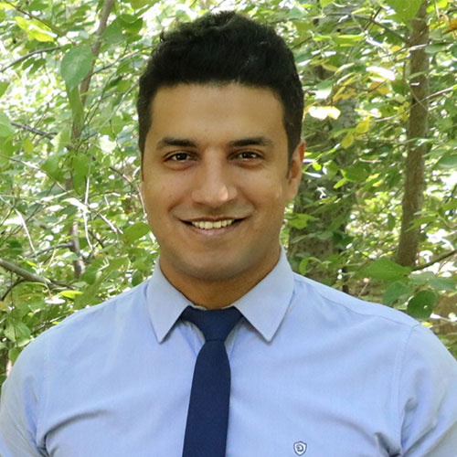

Ehsan Mohammadi
Principal Investigator
Associate Professor at University at South Carolina
View Profile →We study how adults use AI for health advice, helping them build the AI literacy skills to spot unreliable information.
With a focus on adults living with obesity, HEAL explores how people seek, evaluate, and use AI-generated health information to support informed decisions.
Explore Our Research
Obesity is one of the most common chronic conditions in the United States, affecting about 40% of adults. At the same time, generative AI is quickly becoming a trusted resource for health information, with one in three Americans now using AI chatbots for health questions. Where these two trends meet, important questions arise. People managing obesity may turn to AI for advice on diet, exercise, and weight-loss medications. The answers can be helpful, but they can also be inaccurate or incomplete.

People managing obesity may turn to generative AI for health advice, but responses can be inaccurate, incomplete, or unsuitable for individual needs.
Our interdisciplinary team brings diverse expertise to understanding how people use AI for health information.
Associate Professor at University at South Carolina
View Profile →
Combined Internal Medicine / Preventive Medicine Resident Physician (MD) and MPH Candidate at Yale University, School of Medicine
View Profile →
Postdoc at German University of Health and Sport (DHGS)
View Profile →
PhD Student at University of South Carolina
View Profile →
PhD Student at University of South Carolina
View Profile →HEAL is funded by the Network of the National Library of Medicine (NNLM), Region 2, and is led by Ehsan Mohammadi and the HEAL research team.